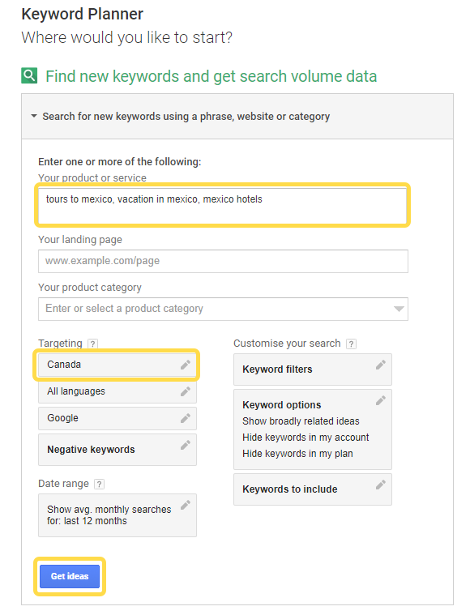
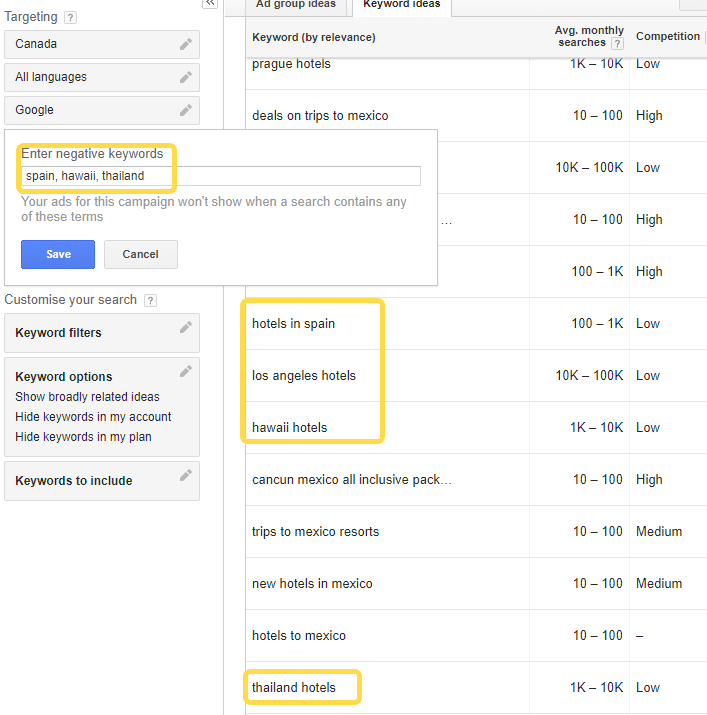
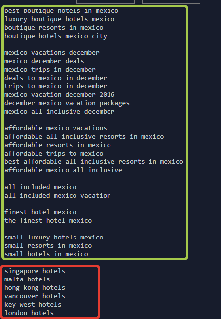
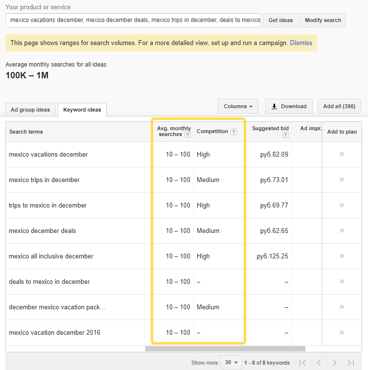

How to Create Expert Content: A Step-by-step Guide for Big Results
Posted on Wed 25 October 2017 in Marketing

Table of contents:
Your company is full of experts. Smart, knowledgeable people who push your business forward.
But I have a hunch they don’t participate much in content marketing. They give a thousand reasons, from “I don’t know what to write about”, to “I’m not a writer”.
And they’re totally right.
Read on to learn how to build a coherent expert content strategy that involves existing employees and doesn’t frustrate them.
As with every good object, a strategy needs three footholds to be stable. For expert content we create in our company, these three pillars are:
- Demand-based content
- Separation of responsibilities within a creation process
- Inherent multi-channel fit
In this guide, I’ll show you, step by step, how to align your content to demand, engage your colleagues in content creation, and save big by employing multi-channel fit.
First pillar: Demand-based content
This one is simple yet overlooked by many. First, research the subject area, come up with a list of topics, and only then hand them over to your experts. A common mistake here is to ask your experts to think up topics for articles. That leads to aligning to what we have to offer but not customer demand.
Another common problem is prioritizing between different topics. Keyword research will provide you with demand volume. Use it to base your strategy on data, not on guesswork.
Finally, analyzing demand in search engines may give you new invaluable customer intents you haven’t thought of before.
How to choose topics for content
There are dozens of various keyword research instruments. Today I’d like to show you our workflow. We do that in a semi-automatic mode using pretty simple free tools.
Collect an initial keyword corpus
First, come up with 3 to 10 seed keywords that you think customers may use. Let’s say we’re going to create a string of expert articles on Mexico vacations. That gives us the following seed keywords:
- tours to mexico
- vacation in mexico
- mexico hotels
Enter them into Google Keyword Planner under the “Search for new keywords” section. Don’t forget to choose geographical locations where you clients may reside.

Check the Keyword ideas that Google offers you. The majority of them should be related to your initial keywords.
If you see that keywords related to your seed ones make only a fraction of a total number, refine your search by specifying required words in the “Keywords to include” option, or by including the words irrelevant to your business in the “Negative keywords” option.

In our experience, this approach works much better than just turning on the “Only show ideas closely related to my search terms” switch.
What if your keyword research hasn’t brought in much result? Turn to your customer-facing department. They interact with clients every day and sure know what terms and questions are most popular. Then take those insights and repeat the whole keyword research process to get some solid data you can base upon.
Download those keywords in the ‘Excel CSV’ format. Now, we need to quickly leave out irrelevant terms. You can do that either by manually checking each line, or by employing a clustering tool.
What is keyword clustering
Simply put, keyword clustering allows you to group phrases by meaning. Such tool can reduce the amount of manual work drastically.
For example, let’s say we have around 30 keywords about Dominicana hotels scattered across our “Mexican” corpus. We either would have to manually find and delete them or just pass the list through a clustering tool. It would make a separate group with those words, so we would be able to easily get rid of them.
There are several free and paid tools in the market. In my view, a good instrument should have the following features:
- Have lemmatization or stemming. It should know that ‘hotel’ and ‘hotels’ are the same words.
- Consider term frequency. We don’t want the tool to make groups based on frequent words, like ‘hotel’.
- Be configurable. You should be able to add stopwords to ignore while clustering and tune other options.
Free clustering tool
As I didn’t find the right tool for me, I put together a simple Python script. It’s available online so you can play with it by pasting your keywords. We use it on a daily basis, and so far it proved handy.
Back to our story. Here’s an example of how the clustered groups may look like for our subject matter:

Now that you have a list of groups, remove the irrelevant ones mercilessly. I’ve highlighted an example of an irrelevant cluster in red. Overcome the temptation to leave them “just in case”. The more targeted semantic core you’ll have, the better content you’ll be able to produce. At this stage, you should end up with 50 to 400 keywords.
Extend the corpus with additional suggestions
Now it’s time to collect the terms that Google didn’t initially show in its suggestions. I’m talking about the “related searches” block at the bottom of each search results page. In fact, these “long-tail” searches are comprised of Google’s autocomplete suggestions and other semantically related terms.
There’s a variety of tools to collect these suggestions. We use a WhiteHat Web scraper. It’s a homegrown application written in Python, which basically controls a browser. It’s capable of automatically collecting data from web pages while allowing you manually interact with websites, like entering captchas and logging in. We’re planning on open sourcing this component shortly.
Whichever tool you prefer, feed your keywords into it to collect related phrases. At this stage, you should have 500 to 2000 keywords.
Most likely, you’ll have a lot of duplicates on your list. Before passing them down the pipeline, remove duplicates. We use a free online tool on online-utility.org. Paste your text there and check the “Remove Duplicates” box.
Clusterize keywords and group them into topics
Using the tool we had discussed in the step on clustering, group the pile of keywords by meaning. As a rule, you’ll end up having 10 to 30 keywords groups. Run through them one more time and combine the groups you believe are very similar in meaning.
So how do we now distribute the resulting groups into separate pieces of content for the most effect? Consider one of the following strategies:
Group by desired content length
If you already have established copywriting guidelines, try and estimate what length would it require to cover each group in detail. Then add up groups until your reach your article length limit. Repeat.
Group by competition level
Check the total keyword frequency and level of competition using Google Keywords Planner. To do that, paste each group’s term into Google Keyword Planner and take a look at ‘Avg. monthly searches’ and ‘Competition’ columns. The two are a reliable sign of how hard would it be for you to show up on the first page of Google results.

You might then want to combine your groups in a way that you don’t have many highly-competitive clusters in one article.
We prefer this method, mostly because we’re organic traffic oriented. As Rand Fishkin wrote back in 2010 (not much has changed since then), you definitely don’t want to lump competitive keywords together on one page.
Group by personas/intent/position in sales funnel
Usually, keywords group are very different in terms of a customer intent. Some represent a ready-to-buy client, whereas the others are simply initial research. Targeting a single customer group within each piece content is a good idea, so take the marketing personas (you have some, don’t you?) and group the keyword clusters to fit different stages of the decision to buy from you.
What do we do now with all the topics we have? How do we involve our experts? I’ll explain this in detail in the second part of this series.